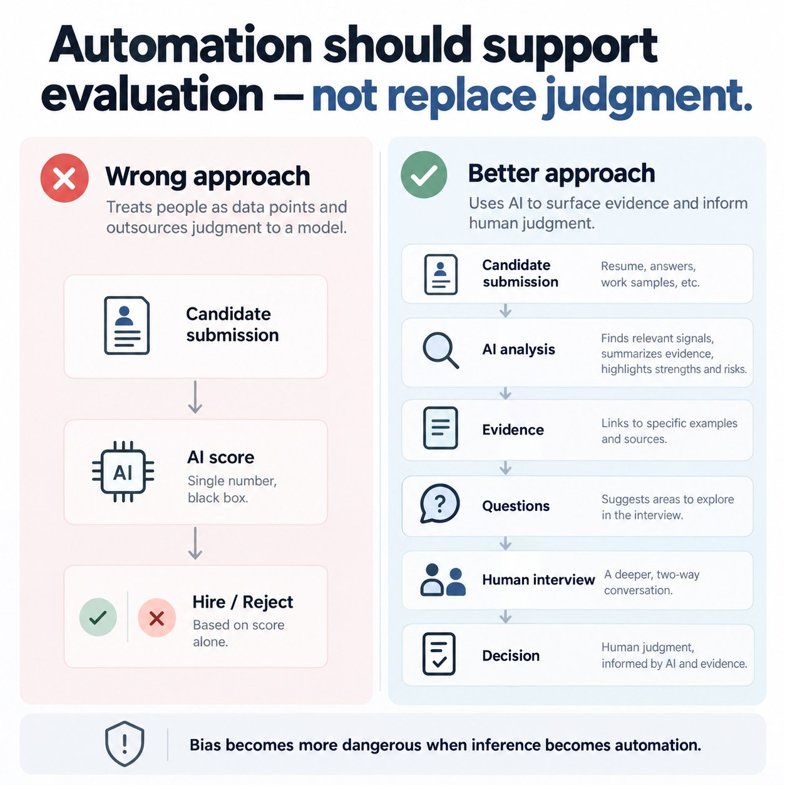
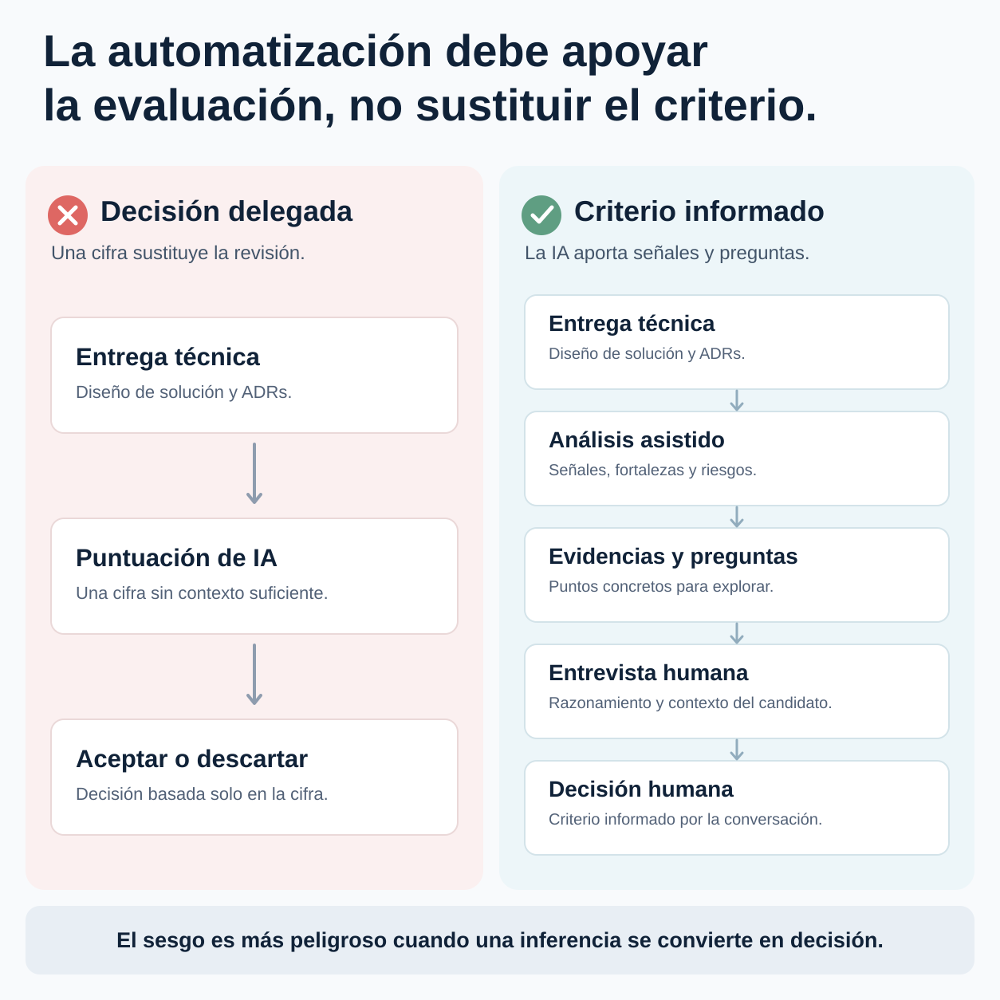

← All writing← Todos los artículos
Can AI help evaluate technical candidates without deciding for us?¿Puede la IA ayudar a evaluar candidatos sin decidir por nosotros?
What an AI-assisted technical exercise review can reveal, where bias can enter and why the hiring decision must remain human.Qué puede revelar una revisión asistida de pruebas técnicas, dónde puede aparecer el sesgo y por qué la decisión de contratación debe seguir siendo humana.
Recently, during a hiring process for Platform Engineers, we built an AI-assisted technical exercise review. The aim was straightforward: reduce manual preparation without making AI the hiring decision-maker.
The exercise had two parts: a technical solution design and architecture decision records (ADRs) explaining the choices behind it. Agents and reusable skills reviewed the submission against several criteria and prepared questions for the interview.

From a submission to useful signals
The review could highlight decisions with thin justification, trade-offs left unexplored, and risks around reliability, security, cost or operability. It could also point out inconsistencies between the proposed architecture and its ADRs.
The intended flow was:
Submission → evidence → observations → areas to explore → interview questions.
The output was a starting point for a technical conversation. It was not a verdict on whether a candidate was “good” or “bad.”
A score is an inference, not a decision
This work sharpened a concern I have about LLM bias. A model does not assess a design from a neutral position. Its learned patterns can favor familiar technologies, conventional architecture and particular ways of explaining a choice. Removing explicit personal attributes does not eliminate the possibility of indirect bias.
A candidate may reason well in a style the model does not expect. An unusual architecture may still be valid. A justified trade-off may differ from the solution most frequently represented in training data.
So the important question is not only whether an LLM can score an exercise. It is what authority we give that score. A percentage can compress uncertainty and disagreement into a number that appears more objective than it is.
Three boundaries for AI-assisted evaluation
- Rubric before model. Define what the exercise is meant to assess before asking a model to review it. Criteria should be visible and open to challenge.
- Evidence before score. An observation should point to a specific part of the submission and explain why it matters. Unsupported ratings are poor interview material.
- Questions before conclusions. A model's inference should lead to a question the interviewer can test with the candidate, including the chance to hear the rationale behind an unconventional choice.
These boundaries do not make bias disappear. They keep uncertain model judgments inspectable and prevent them from silently becoming decisions.
Keep the authority with the interviewer
The useful outcome was less time spent preparing interviews and more time for deeper technical conversations. AI helped turn a complex submission into evidence and targeted questions. The interviewer still had to listen, challenge the analysis, understand context and make the final decision.
Bias becomes especially dangerous when an inference is automatically promoted into action. In hiring, the system should help people exercise better judgment, not outsource judgment to a model.
Hace poco, durante un proceso de selección para incorporar Platform Engineers, construimos una revisión de pruebas técnicas asistida por IA. El objetivo era sencillo: reducir el trabajo manual de preparación sin convertir la IA en quien tomara la decisión de contratación.
La prueba tenía dos partes: el diseño de una solución técnica y ADRs que justificaban las decisiones tomadas. Un conjunto de agentes y skills analizaba la entrega según varios criterios y preparaba preguntas para la entrevista.

De la entrega a señales útiles
La revisión podía señalar decisiones poco justificadas, trade-offs sin explorar y riesgos de fiabilidad, seguridad, coste u operabilidad. También podía detectar inconsistencias entre la arquitectura propuesta y sus ADRs.
El flujo buscado era:
Entrega → evidencias → observaciones → puntos a explorar → preguntas para la entrevista.
El resultado servía para iniciar una conversación técnica. No era un veredicto sobre si el candidato era «bueno» o «malo».
Una puntuación es una inferencia, no una decisión
Este trabajo reforzó una preocupación que tengo sobre los sesgos de los LLM. Un modelo no evalúa un diseño desde una posición neutral. Los patrones que ha aprendido pueden favorecer tecnologías habituales, arquitecturas convencionales y determinadas formas de explicar una decisión. Eliminar atributos personales explícitos no elimina la posibilidad de sesgos indirectos.
Un candidato puede razonar bien y expresarlo de una forma que el modelo no espera. Una arquitectura poco habitual puede ser válida. Un trade-off bien justificado puede diferir de la solución que más aparece en los datos de entrenamiento.
Por eso, la pregunta importante no es solo si un LLM puede puntuar una prueba. Es qué autoridad damos a esa puntuación. Un porcentaje puede comprimir incertidumbre y desacuerdo en una cifra que parece más objetiva de lo que es.
Tres límites para una evaluación asistida por IA
- Criterios antes que modelo. Define qué quieres evaluar antes de pedirle al modelo que revise la entrega. Los criterios deben ser visibles y cuestionables.
- Evidencia antes que puntuación. Una observación debe señalar una parte concreta de la entrega y explicar por qué importa. Una calificación sin fundamento ayuda poco en la entrevista.
- Preguntas antes que conclusiones. Una inferencia del modelo debe convertirse en una pregunta que el entrevistador pueda contrastar con el candidato, también para entender por qué eligió una opción poco habitual.
Estos límites no hacen desaparecer el sesgo. Permiten examinar los juicios inciertos del modelo y evitan que se conviertan silenciosamente en decisiones.
La autoridad permanece en el entrevistador
El resultado útil fue dedicar menos tiempo a preparar entrevistas y más tiempo a conversaciones técnicas profundas. La IA ayudó a convertir una entrega compleja en evidencias y preguntas concretas. El entrevistador seguía teniendo que escuchar, cuestionar el análisis, entender el contexto y tomar la decisión final.
El sesgo se vuelve especialmente peligroso cuando una inferencia se transforma automáticamente en una acción. En selección de personal, el sistema debe ayudar a las personas a ejercer mejor su criterio, no delegarlo en un modelo.